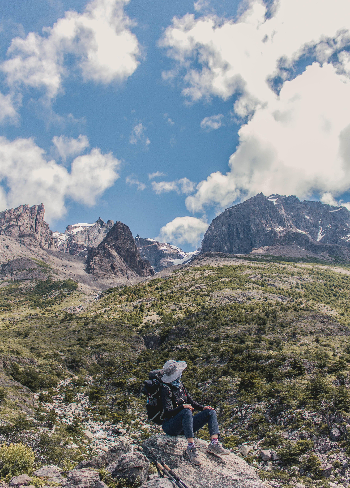
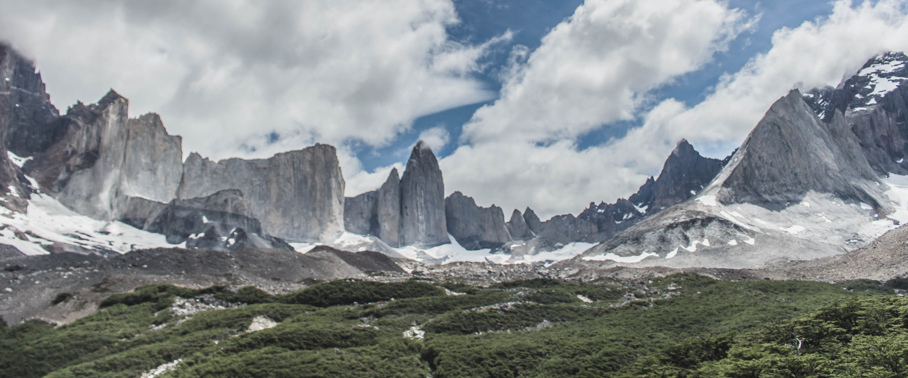
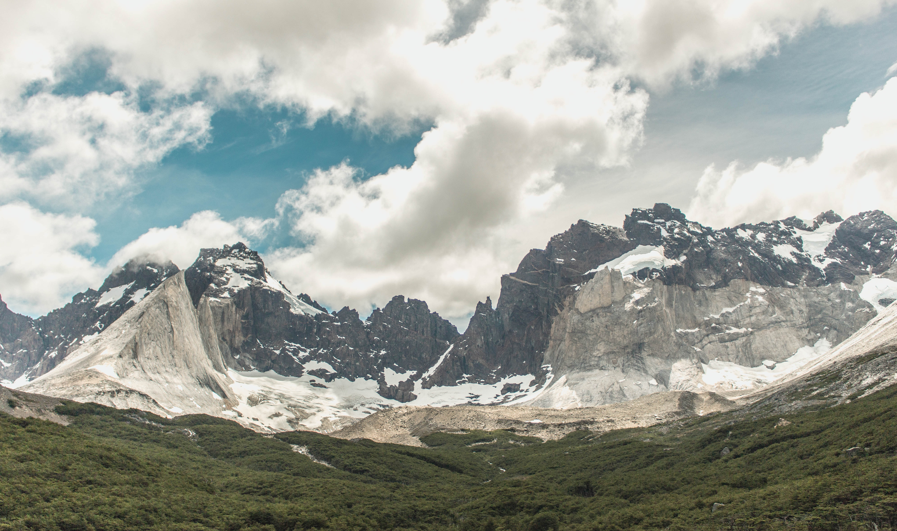

Yoon's Torres del Paine Adventure
Torres del Paine is every hiker's dream. Most of trekkers take 3 nights 4 days trek, the W trek. Facilities inside Torres del Paine national park are quite well maintained. If you are a backpacker with low budget however, you might consider sleeping in a tent as nightly rates for refugios goes as high as 65 USD per night. I stayed in refugios for the entire trek and ordered the meals as well.
W trek was the most beautiful trek I did in South America.



Back to Chile Adventure